|
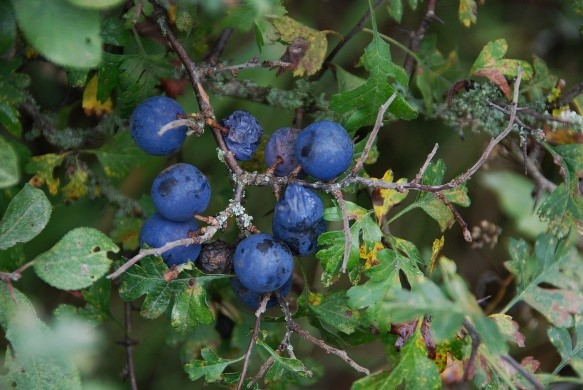
Сильно разветвленный, очень колючий кустарник, реже небольшое деревцо до 4-8 м высотой. Молодые побеги коротко волосисто-опушенные.
Листья очередные (1) 2-4 (5) см длиной, эллиптически обратно-яйцевидные, в основании клиновидные, на верхушке тупые, по краю остро или
городчато пильчатые. Цветки распускаются раньше листьев, одиночные или очень редко по 2, 1,4-1,8 см в диаметре; цветоножки 5-6 мм длиной,
торчащие, голые или слегка опушенные. Лепестки белые или с зеленоватым оттенком. Плоды около 1 см в диаметре, округлые, овальные,
округло-конусовидные, черно-синие, с густым сизым налетом. Мякоть плода зеленая, кисло-сладкая, сильно терпкая. Косточки яйцевидные или
овально-яйцевидные, бугристо-морщинистые. Насекомоопыляемое. Зоо- и орнитохор. Цветет в марте - мае, плоды созревают в июле - августе.
Фотограф: Эльман Юсифов |
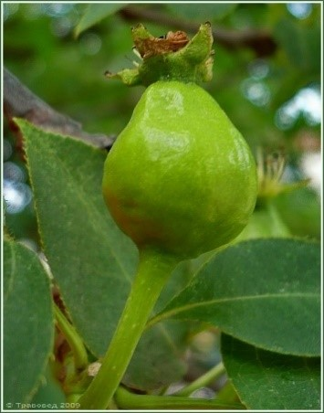
Листопадное дерево до 10(15) м высотой с широкопирамидальной или овальной кроной. Кора стволов и крупных ветвей неровная, темно-серая,
более молодых ветвей - от серовато-бурой до почти черной. Молодые шерстистые, позже оголяющиеся, бледно-коричневые.
Листья 3,5-7,5 см длиной и 3,5-6 см шириной, округло- или широкояйцевидные, с резко заостренной, удлиненной верхушкой,
с сердцевидным или округлым основанием, по краю остропильчатые, сверху голые и блестящие, снизу молодые слабо опушенные, позже голые.
Цветки 3-4 см в диаметре собраны в соцветия по 5-7(9) цветков. Чашелистики широко-треугольные, на конце оттянутые, сверху опушенные,
обычно долго сохраняются при плодах. Лепестки белые, гофрированные. Плоды шаровидно-грушевидные или почти грушевидные,
тупо конусовидные или почти шаровидные, до 1,4-5(7) см в диаметре, желтоватые, желтовато-зеленые с мелкими белыми крапинками,
иногда с ржавыми пятнами, с короткой плодоножкой. Мякоть сочная, с приятным ароматом, кисло-сладкая, терпкая,
с большим количеством каменистых клеток. Отличается высокой морозостойкостью, но значительно поражается болезнями,
особенно восточной расой парши. Насекомоопыляемое. Орнито- и зоохор. Размножается семенами, отводками, корневыми и летними черенками.
Цветет в мае до распускания листьев, плоды созревают в сентябре.
Фотограф: Сергей Апполонов |
|
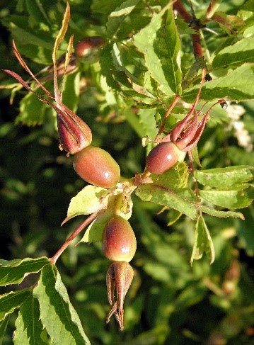
Кустарник до 2 м высотой. Стебли покрыты краснобурой корой и шипами двух типов: на цветоносных побегах и верхних частях турионов
они однотипные, слабоизогнутые, до 1,4 см длиной, плоские, обычно сближены в пары; на нижних частях турионов кроме плоских присутствуют
мелкие, игловидные, имеющие сильно расширенное основание шипы. Листья 12-13 см длиной, обычно из 7 узкоэллиптических,
по краю двоякозубчатых листочков, обильно покрытых снизу мелкими железками. Цветки одиночные или по 2, розовые, 4-5 см в диаметре.
Чашелистики после цветения направлены вверх и долго сохраняются. Плод 2-3 см длиной, оранжево-красный, удлиненный, к концам суженный.
Фотограф: Татьяна Сова |
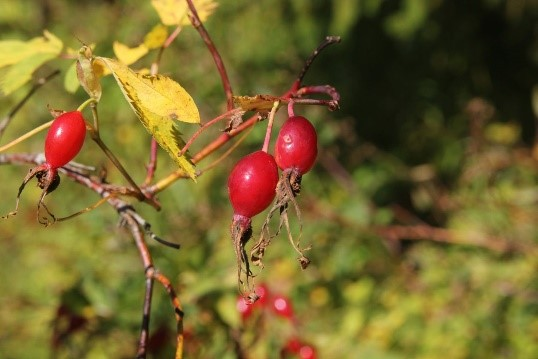
Листопадный кустарник до 1,5 - 2 м высотой с тонкими, голыми, блестящими, красноватыми побегами, покрытыми небольшими и
изогнутыми шипиками, расположенными чаще всего у основания листьев и молодых побегов. В нижней части ветвей могут быть многочисленные
прямые тонкие шипики и щетинки. Листья очередные, сложные, непарноперистые, 5-9 см длиной, состоящие из 5-7 (9) листочков.
Листочки 1,5-5 см длиной, продолговато-эллиптические, острые, по краю железисто-мелкопильчатые или зубчатые, с обеих сторон от голых до
опушенных, без точечных железок. Цветоножки 0,5-3 см длиной, от голых до железисто опушенных. Чашелистики 1-3,3 см длиной цельнокрайные,
снаружи от голых до опушенных, часто покрытых стебельчатыми железками. Цветки одиночные или по 3-5. Венчики розовые, 3-6 см в диаметре.
Плод - многоорешек внутри разросшегося гипантия, который становится мясистым и образует оболочку ложного плода. Плоды 10-20 мм длиной,
красные, оранжевые, шаровидные, яйцевидные, голые, мясистые, с сохраняющимися восходящими чашелистиками. Насекомоопыляемое.
Орнито- и зоохор. Размножается семенами и летними черенками. Семена необходимо стратифицировать 6-7 месяца при 3-5 градусах по Цельсию.
Цветет в мае-июне, плоды созревают в августе-сентябре.
Фотограф: Александр Лебедев |
|
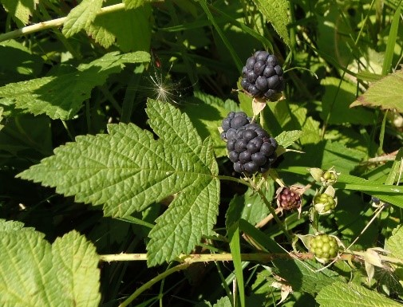
Полукустарник с вьющимися или стелющимися, часто укореняющимися побегами 0,5-2 м длиной. Побеги покрыты сизым налетом и многочисленными,
прямыми и изогнутыми шипами с примесью немногочисленных стебельчатых железок, голые или оголяющиеся. Листья непарноперистые,
обычно трехлисточковые, редко пятилисточковые. Черешки 4-6 см длиной усажены шипиками. Листочки цельные или лопастные,
яйцевидно-ромбические, с обеих сторон от голых до негусто опушенных, сверху зеленые, снизу светлее, по краю крупно надрезано-зубчатые.
Цветки собраны на концах ветвей в негустые щитковидные метелки. Цветоножки опушены простыми или железистыми волосками.
Чашелистики снаружи опушенные, с немногочисленными железками. Венчики белые, 2-3 см диаметром. Плоды - синевато-черные с сизым налетом,
многокостянки. Насекомоопыляемое, орнито- и зоохор. Размножается семенами, корневыми и летними черенками. Цветет во второй половине
июня - начале июля, плодоносит в августе.
Фотограф: Сергей Одинец |
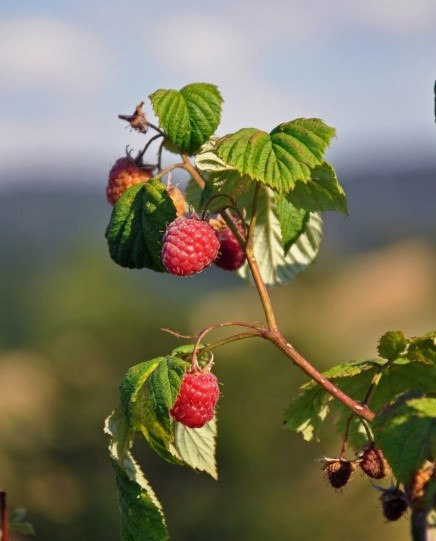
Кустарник имеет многолетнюю корневую систему, состоящую из корневища и придаточных корней, и крону, сформированную из однолетних и
двулетних побегов. Корни проникают на глубину 40-50 см и разрастаются в стороны на расстояние 40-300 см от центра куста.
В отличие от других ягодных кустарников, надземный побег живет только два года. В первый год зеленые слабошиповатые побеги растут,
достигая к осени длины 1,5-3,0 м. На второй год побеги деревенеют и становятся коричневыми. Листья овальные, очередные, черешковые,
сложные, с 3-7 яйцевидными листочками, сверху темно-зеленые, снизу беловатые, опушены мелкими волосками. В пазухах листьев образуются
смешанные почки, на второй год из них вырастают боковые веточки с соцветиями. Цветки белые, обоеполые, самоопыляющиеся,
около 1 см в поперечнике, собраны в небольшие кистевидные соцветия. Цветет с июня по июль в течение 20-25 дней.
Плод - сборная опушенная костянка (многокостянка) красной, желтой или черной окраски, сидящая на разросшемся цветоложе.
Вес плода около 3 г (до 6 г). Основной урожай формируется в средней части побега. Высокие урожаи дает через 2-3 года после посадки.
Фотограф: Марина Скотникова |
|
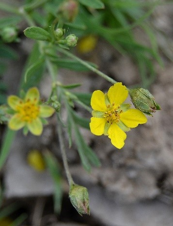
Многолетнее растение 4—30 см выс.; Корневище длинное, шнуровидное; Стебли прямостоящие или восходящие, олиственные,
как и черешки листьев и цветоносы, густо отстояще волосистые; Прилистники с ланцетовидными,, цельными, реже зубчато-рассеченными концами,
зеленые, у нижних: стеблевых листьев ржаво-бурые; Листья перистые, с 3—6 парами листочков, листочки 7—15 мм дл.,
от ланцетовидных до эллиптических, обычно двулопастные, реже цельные, верхушечный листочек зачастую трехлопастной,
с обеих сторон слабо или более или менее густо прижато-волосистые, снизу с выступающей сетью жилок; Цветки некрупные, 7—12 мм в диам.,
в многоцветковых, почти щитковидных соцветиях; Лепестки желтые, обратно-округло-яйце-видные, на верхушке цельные,
в 1,5 раза превышают длину чашелистиков.
Фотограф: Леонид Непоменко |
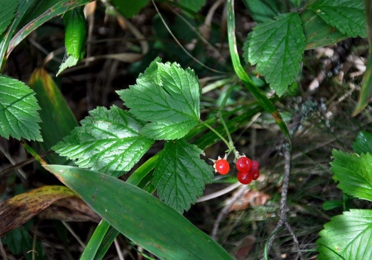
Многолетник. Крщ. не ползучее, развивающее однолетние нецветущие побеги и цветоносные ст., первые удлиненные, распростертые, тонкие,
цилиндрические, б. м. опушенные, рассеянно тонко-игольчатые (как и чрш. л.), иногда несколько железистые,
осенью ветвящиеся и нередко укореняющиеся на верхушке; цветоносные ст. прямостоячие, 10—25 см выс.,
при основании одетые чешуйчатыми низовыми л., начиная с середины хорошо облиственные; прлрт. свободные,
на нецветущих побегах яйцевидные или широко-эллиптические, у верхних л. линейно-ланцетные, на цветоносных более широкий;
л. на длинных чрш., тройчатые, боковые листочки на очень коротких черешочках, часто двулопастные, конечный на черешочке,
ромбической формы, все двояко надрезанно-зубчатые, с обеих сторон зеленые, волосистые. Цв. обоеполые, небольшие,
но 3—10 в зонтиковидных или кистевидных сцв. на конце ст., иногда, кроме того, по 1—2 на пазушных веточках, на цвн.;
чшл. ланцетные, назад отогнутые; л. прямостоящие, небольшие, узкие, лопатчатые, белые; тыч. линейные, значительно превышающие длиною стлб.;
плодики немногочисленные, 1—6, крупные, едва соединенные между собою, яркокрасные; косточка крупная, сла6о-морщинистая. V—VII.
Фотограф: Марина Скотникова |
|
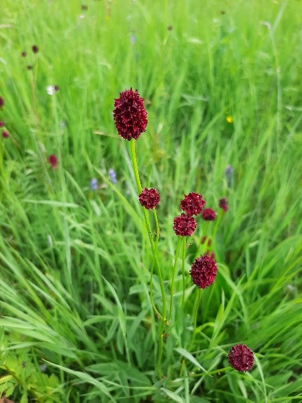
Многолетнее растение 20—100 см выс.; Корневище горизонтальное, довольно густо покрытое остатками отмерших листьев; Стебель гранистый,
голый, в верхней части ветвистый;Листья перистые, снизу бледно-зеленые, прикорневые на более или менее длинных черешках с 7—25 боковыми
листочками, стеблевые более мелкие, сидячие, листочки продолговато-яйцевидные, при основании обычно сердцевидные,
пиловидно-зубчатые на черешочках, к верхушке более длинных, при основании их находятся иногда маленькие зубчатые прилистнички;
Цветки темно-пурпуровые;Прицветники продолговато-яйцевидные, заостренные, буроватые; Цветет в июне - августе, плодоносит в
августе - сентябре.
Фотограф: Анастасия Дьянкова |
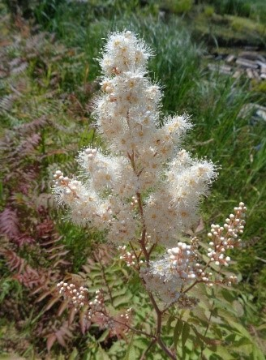
Кустарник 1—3 м выс. с тонко опушенными, позднее голыми светлыми ветвями. Листья непарноперистые, 12—25 см дл.,
с 5—8 (редко 9) парами листочков. Листочки широколанцетные, длинно заостренные, двояко пиловидно-зубчатые, голые,
редко по краю или с нижней стороны с единичными кустистыми волосками. Оси соцветия и черешки листьев коротко опушенные и железистые.
Цветки белые, до 1 см диам., в длинных (12—15 см дл.), густых, многоцветковых метелках. Листовки ок. 5 мм дл., прижато-волосистые.
Фотограф: Вадим Рыбаков |
|
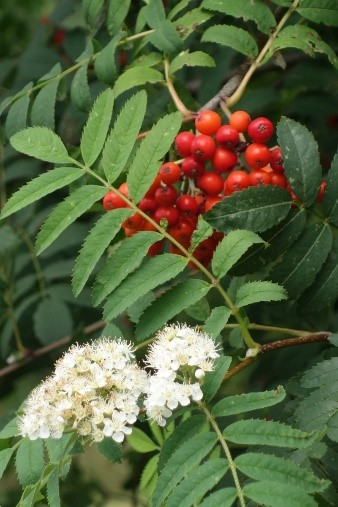
Листопадное дерево 4-15 м высотой, реже кустарник. Кора серая, гладкая. Почки густо- или лохмато-волосистые. Листья с прилистниками,
очередные, непарноперистые, с 4-7 парами листочков. Черешки листьев более-менее густоволосистые. Листочки продолговато-ланцетовидные,
по краю пильчатые, сверху матово-зеленые, снизу сероватые. Соцветие - густой щиток до 10 см. в поперечнике. Цветки диаметром 0,8 - 1,5 см.
Цветки пятичленные, с сильным горько-миндальным запахом. Чашечка пятираздельная, шерстистая, позднее голая, зубцы по краям с железистыми
ресничками. Лепестки белые, округлые, длиной 4-5 мм. Тычинки в числе 20, равны по длине лепесткам. Плоды почти шаровидные, яблокообразные,
сочные, ярко оранжево-красные, 9-10 мм в диаметре. Семена красноватые, серповидно-изогнутые, обычно 3 шт. Насекомоопыляемое.
Орнито- и зоохор. Цветет в мае-июне, плоды созревают в сентябре и обычно висят на деревьях до начала зимы.
Фотограф: Екатерина Кулаковская |
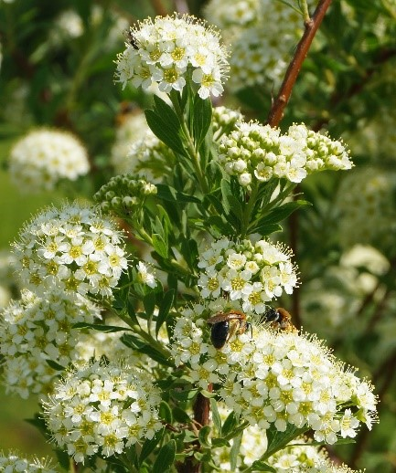
Кустарник 50-100 см выс. с тонкоребристыми опушенными ветвями. Листья короткочерешковые, пластинки их эллиптические или
удлиненно-обратнояйцевидные, 10-30 мм дл., серовато-зеленые от короткого опушения, редко голые, цельнокрайные или от середины
(иногда только на верхушке) городчато-зубчатые, с 3 выдающимися жилками. На цветоносных побегах листья более короткие,
6-20 мм дл. и узкие - до ланцетных, цельнокрайные. Цветки белые, 6-7 мм диам., на пушистых цветоножках, в многочисленных,
плотных щитках на верхушках коротких облиственных веточек. Чашелистики коротко опушенные, при отцветании с прямостоячими зубцами.
Листовки прямостоячие, 2-3 мм дл., опушенные, реже почти голые.
Фотограф: Тамара Риб |